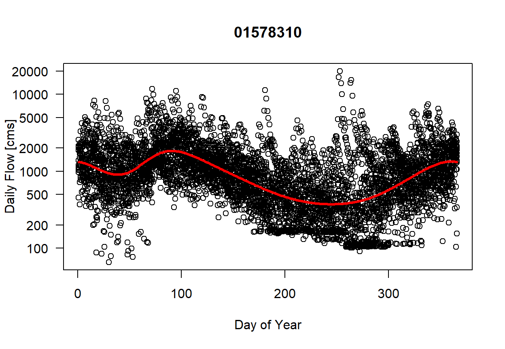
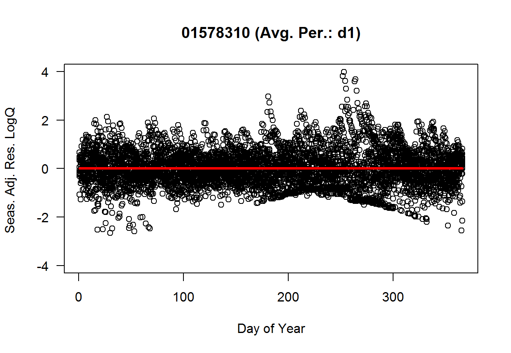
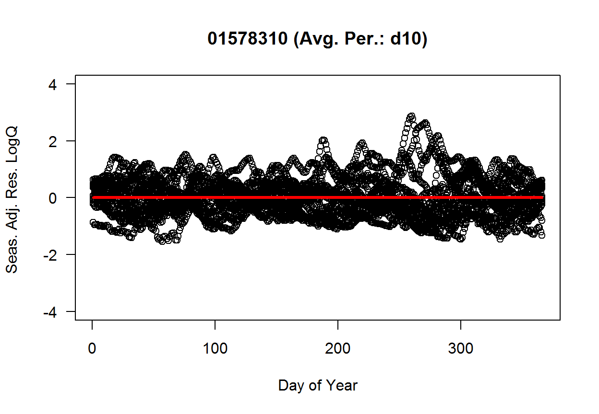
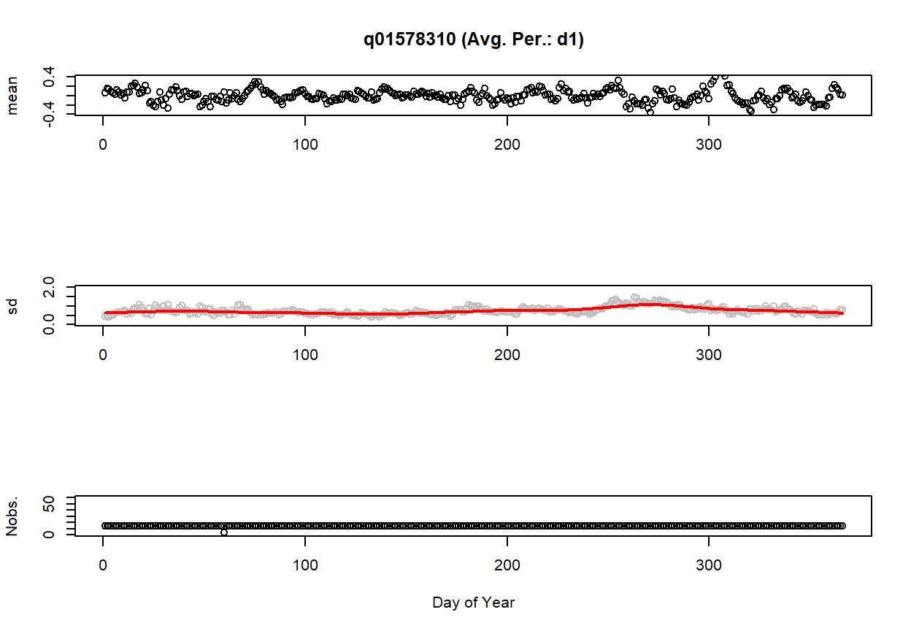
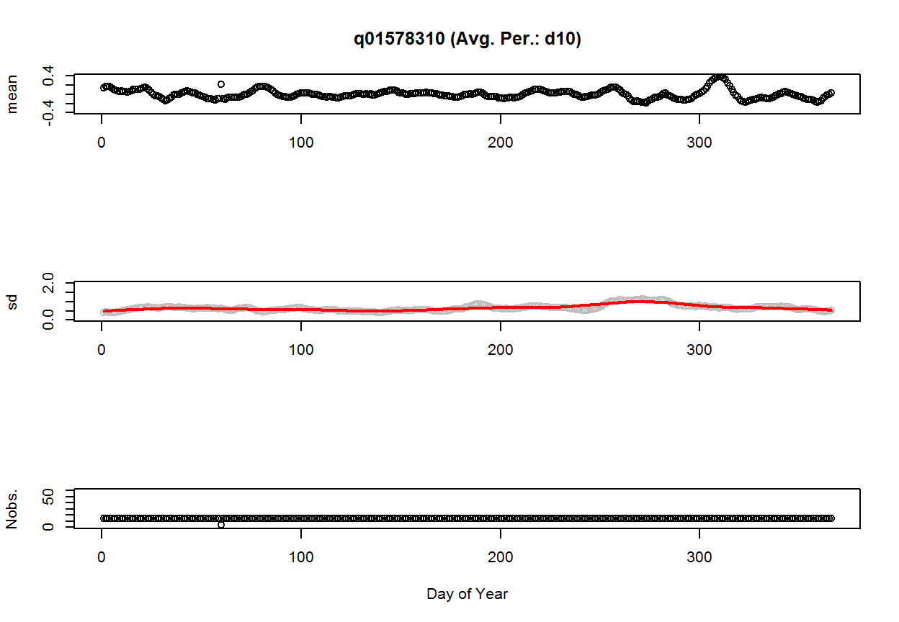
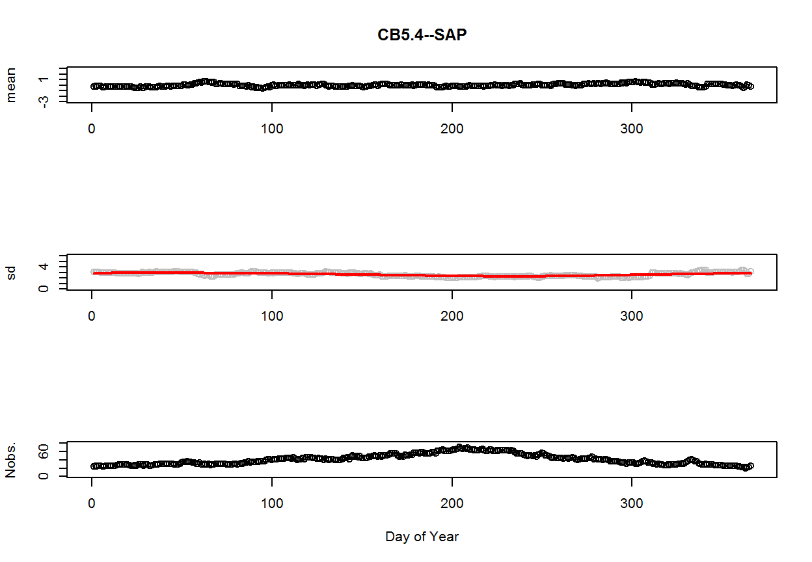
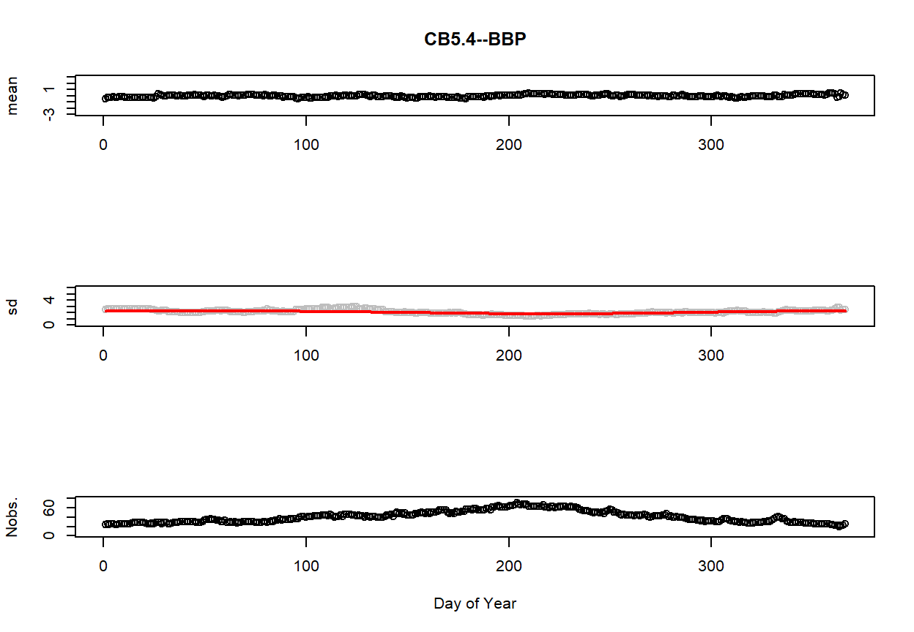
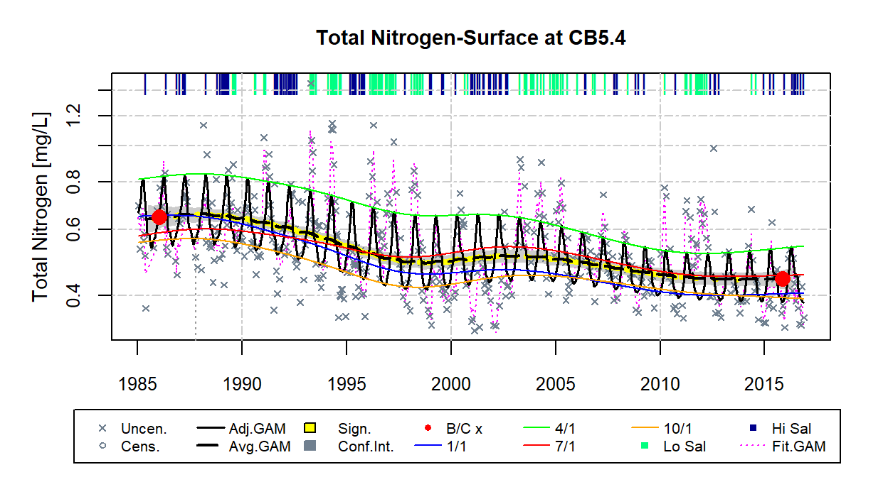

vignettes/create_Seasonally_Detrended_Flow_and_Salinity_Data_Sets.Rmd
create_Seasonally_Detrended_Flow_and_Salinity_Data_Sets.RmdThe purpose of this vignette is to cover the basics for creating seasonally detrended flow and seasonally detrended salinity data sets. These data sets are used in support of applying gam4. In gam4, the dependent variable is modeled with a non-linear term as a function of year; a seasonality term includes an interaction term which allows seasonality to vary over the period of record; and includes a hydrologic term that allows for factoring wet/dry conditions in the model.
The seasonally detrended flow and salinity data sets are created using the detrended.flow and detrended.salinity functions included in baytrends. Refer to the help for each of these functions (e.g., ??detrended.flow or ??detrended.salinity) for the specific computational steps involved with each function.
The first step is to load the baytrends library. Loading baytrends will result in loading multiple additional libraries as well.
library(baytrends)
#> Loading required package: lubridate
#>
#> Attaching package: 'lubridate'
#> The following object is masked from 'package:base':
#>
#> date
#> Loading required package: mgcv
#> Loading required package: nlme
#> This is mgcv 1.8-30. For overview type 'help("mgcv-package")'.
#> ** baytrends 1.1.0 Notice:** This software program is preliminary or provisional and is subject to revision. This software program is for testing only, no warranty, expressed or implied, is made as to the accuracy and functioning of the program and related program material nor shall the fact of distribution constitute any such warranty, and no responsibility is assumed by in connection therewith. This software is provided 'AS IS.'
#>
#> Attaching package: 'baytrends'
#> The following object is masked from 'package:utils':
#>
#> ViewThe function, detrended.flow, returns a list of seasonally detrended flow and companion statistics. It relies on USGS’ dataRetrieval package to retrieve daily flow data.
It is the user’s responsibility to save the list that is returned from the detrended.flow function as flow.detrended for integration with baytrends.
For purposes of the Chesapeake Bay Program, it is expected that the user would typically identify all nine of the River Input Monitoring (RIM) stations. The nine RIM stations for the Chesapeake Bay have been loaded as a data frame in baytrends, usgsGages.
Table 1. Chesapeake Bay River Input Monitoring Stations
| usgsGageID | siteName |
|---|---|
| 01491000 | Choptank River near Greensboro, MD |
| 01578310 | Susquehanna River at Conowingo, MD |
| 01594440 | Patuxent River near Bowie, MD |
| 01646500 | Potomac River at Chain Bridge, Washington, DC |
| 01668000 | Rappahannock River near Fredericksburg, VA |
| 01673000 | Pamunkey River near Hanover, VA |
| 01674500 | Mattaponi River near Beulahville, VA |
| 02035000 | James River at Cartersville, VA |
| 02041650 | Appomattox River at Matoaca, VA |
The below code chunk is an example of retrieving and seasonally detrending daily flow data for all nine of the RIM stations from 1983-2017. To retrieve data for other USGS gages, the variables, usgsGagesID and siteName would be assigned with vectors that contain the list of USGS gage IDs and their site names. The vector of gage IDs are used to retrieve data while the vector of siteNames is used for diagnostic plots created by the function, detrend.flow.
To best match up with water quality data, we recommend retrieving flow data for one year prior to the first year of water quality data. This allows for creating a time-averaged flow data set and not loose the first few months of water quality data due to lack of matching flow data. Data retrievals should also be made in light of the time needed by the USGS to review and approve their flow records.
Information about the settings for dvAvgWinSel, dvAvgWgtSel, dvAvgSidesSel, lowess.f, span, and max.fill are described in the help file for this function.
# Define Function Inputs
usgsGageID <- usgsGages$usgsGageID # all RIM stations
siteName <- usgsGages$siteName # all RIM stations
yearStart <- 1983
yearEnd <- 2017
dvAvgWinSel <- c(1, 5, 10, 15, 20, 30, 40, 50, 60, 90, 120, 150, 180, 210)
dvAvgWgtSel <- "uniform"
dvAvgSidesSel <- 1
lowess.f <- 0.2
# Run detrended.flow function
flow.detrended <- detrended.flow(usgsGageID, siteName, yearStart, yearEnd
, dvAvgWinSel, dvAvgWgtSel, dvAvgSidesSel
, lowess.f)
# Save list to data file separate use
save(flow.detrended, file='mySeasonallyDetrendedFlow.rda')The following five figures Figures 1-5 provide an example analysis for the USGS gage on the Susquehanna River at Conowingo, Maryland. Figure 1 displays the daily flow values [cms] as a function of the day of year for data from 2003-2017. The solid red line represents the predicted GAM using the function Log(Q)~s(doy,bs=‘cc’).
Subtracting the predicted GAM from the observations yields the observations plotted in Figure 2. The ordinate is plotted on a log scale since the predicted GAM and observations were log transformed. We also refer to this as the 1-day-smoothed residuals. A 10-day-smoothed residual is displayed in Figure 3. Using the above settings for dvAvgWgtSel (“uniform”) and dvAvgSidesSel (1), the 10-day smoothed residual is the average of the preceeding nine days and the current day of the 1-day-smoothed residual. That is, the value on June 10, 2015 is equal to the average of the values from June 1-10, 2015. As the number of days used in the averaging process increases, the range of residuals decreases. These x-day smoothed residuals are used in gam4 and can be thought of an indicator of how wet or dry a particular time period is relative to the average.
Figures 4 and 5 display summary statistics (mean, standard deviation [sd], and number of observations [Nobs.] for the 1-day and 10-day smoothed residuals. The red line on the standard deviation plot is based on a lowess smooth. The standard deviations associated with the red line are used for computing confidence intervals.

Figure 1. Daily Flow [cms] as a Function of Day of Year. (Solid red line is the predicted GAM model using the model: gam(LogQ ~ s(doy,bs=‘cc’)).)

Figure 2. 1-day-smoothed Seasonally-adjusted Log Flow Residuals as a Function of Day of Year.

Figure 3. 10-day-smoothed Seasonally-adjusted Log Flow Residuals as a Function of Day of Year.

Figure: d1: Mean, standard deviation, and number of observations as a Function of Day of Year.

Figure: d10: Mean, standard deviation, and number of observations as a Function of Day of Year.
The function, detrended.salinity, returns a list of seasonally detrended salinity and companion statistics.
It is the user’s responsibility to save the list that is returned from the detrended.salinity function as salinity.detrended for integration with baytrends.
The detrended.salinity evaluates a user-supplied data set. baytrends includes a sample salinity data set, sal, that corresponds to the water quality data stored in dataCensored. Table 2 and Table 3 display some sample data and the structure of sal.
Table 2. Example Salinity Data
| station | date | layer | salinity |
|---|---|---|---|
| LE3.6 | 1984-06-27 | S | 11.71 |
| LE3.6 | 1984-06-27 | B | 13.44 |
| CB5.4 | 1984-06-29 | S | 10.17 |
| CB5.4 | 1984-06-29 | B | 21.07 |
| CB5.1 | 1984-07-10 | S | 8.69 |
| LE3.6 | 1984-07-11 | S | 12.90 |
Table 3. Data Structure Associated with sal
#> 'data.frame': 51092 obs. of 4 variables:
#> $ station : chr "LE3.6" "LE3.6" "LE3.6" "LE3.6" ...
#> $ date : POSIXct, format: "1984-06-27" "1984-06-27" ...
#> $ layer : chr "S" "M" "M" "B" ...
#> $ salinity: num 11.7 12.1 12.6 13.4 21.6 ...The below code chunk is an example for analyzing all of the data contained in the sample data frame, sal. As currently developed, detrended.salinity will average salinity in the surface (‘S’) and above pycnocline (‘AP’) layers to create an average salinity value for the surface and above pycnocline (SAP) layer. detrended.salinity will also average salinity in the bottom (‘B’) and below pycnocline (‘AP’) layers to create an average salinity value for the bottom and below pycnocline (BAP) layer.
The use and settings for dvAvgWinSel, lowess.f, minObs, and minObs.sd are described in the help file. The detrened.salinity function will assume the user wants to evaluate the salinity for all of the stations in sal and for all the years of available data.
# Define Function Inputs
df.sal <- sal
dvAvgWinSel <- 30
lowess.f <- 0.2
minObs <- 40
minObs.sd <- 10
# Run Function
salinity.detrended <- detrended.salinity(df.sal, dvAvgWinSel,
lowess.f, minObs, minObs.sd)
# Save list to data file separate use
save(salinity.detrended, file='mySeasonallyDetrendedSalinity.rda')The below figures display summary statistics (mean, standard deviation [sd], and number of observations [Nobs.] for the SAP and BBP layers, respectively. The red line on the standard deviation plot is based on a lowess smooth. The standard deviations associated with the red line are used for computing confidence intervals.
The reader is referred to the help file for detrend.salinity to learn more about the procedure used to compute these statistics and how windowing is used address the issues related to sparse sampling.
[1] “CB5.4 (Surface: TRUE / Bottom: TRUE)” 
Figure 1. SAP mean, standard deviation, and number of observations as a Function of Day of Year.

Figure 2. BBP mean, standard deviation, and number of observations as a Function of Day of Year.
It is now possible to run gam4 using the results of the above analyses. The below code chunk will run the gam4 for surface total nitrogen at station CB5.4.
dfr <- analysisOrganizeData(dataCensored, reports = NA)
df <- dfr[["df"]]
analySpec <- dfr[["analySpec"]]
# down select analyzed GAM
analySpec$gamModels <- analySpec$gamModels[5]
stat = 'CB5.4'; dep = 'tn'; layer = 'S';
gamResult <- gamTest(df, dep, stat, layer, analySpec
, salinity.detrended=salinity.detrended)
Table: GAM Analysis of Variance.
| Type | Source | edf | F-stat | p-value |
|---|---|---|---|---|
| parametric terms | cyear | 1.00 | 1.2626 | 0.2618 |
| smoothed terms | s(cyear) | 5.98 | 6.2500 | <0.0001 |
| " " | s(doy) | 7.06 | 35.9148 | <0.0001 |
| " " | ti(cyear,doy) | 5.64 | 2.7871 | <0.0001 |
| " " | s(flw_sal) | 2.40 | 81.7670 | <0.0001 |
| " " | ti(flw_sal,doy) | 5.14 | 5.5401 | <0.0001 |
| " " | ti(flw_sal,cyear) | 5.85 | 3.3318 | 0.0016 |
| " " | ti(flw_sal,doy,cyear) | 1.88 | 0.1106 | 0.0239 |
Table: GAM Parameter Coefficients.
| Parameter | Estimate | Std. Err. | t value | p-value |
|---|---|---|---|---|
| (Intercept) | -0.621706 | 0.012134 | -51.2353 | <0.0001 |
| cyear | 0.014114 | 0.012560 | 1.1237 | 0.2618 |
Table: GAM Diagnostics.
| AIC | RMSE | Adj. R-squared |
|---|---|---|
| -442.97 | 0.1398 | 0.7294 |
Table: Estimates of Change from 1985-2016.
| Calculation | Estimate |
|---|---|
| Baseline log mean (geometric mean) | -0.4394 (0.6444) |
| Current log mean (geometric mean) | -0.818 (0.4413) |
| Estimated log difference | -0.3786 |
| Std. Err. log difference | 0.0468 |
| 95% Confidence interval for log difference | (-0.4704 , -0.2868) |
| Difference p-value | <0.0001 |
| Period of Record Percent Change Estimate (%) | -31.52% |